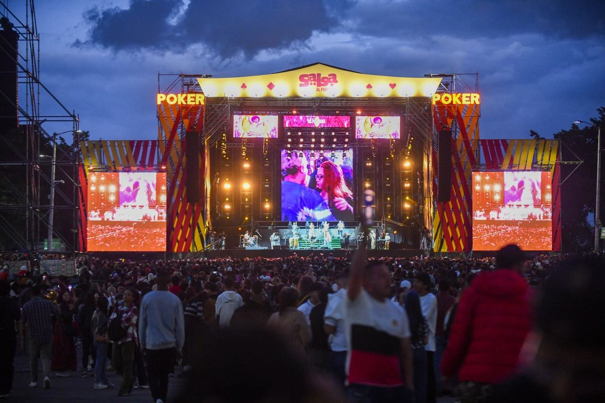

Festivals · Music
Salsa al Parque 2026
- Dates
- –
- Venue
- Parque Simón Bolívar
- Location
- Bogotá, Colombia
- Format
- In-person
- Category
- Music
- Industry
- Music festival (public, free)
- Organiser
- Idartes (Alcaldía de Bogotá)
- Official website
- https://salsaalparque.gov.co/
About
Free public festival; 2026 bill led by Alfredo de la Fé, Orquesta Aragón and Roberto Blades. Colombia dates are local (Colombia time, UTC-5 all year, no daylight saving).
Topics: salsa, Afro-Caribbean music, dance.
No organiser attendance figure found on the official pages checked (24 Nov 2026). Ranked by an estimated size tier 'large' (about 10,000-100,000 attendees; our judgement from format, venue and scale, not an official number).
Sources
- Official (government) — https://salsaalparque.gov.co/
- Official (Idartes festival site) — https://salsaalparque.gov.co/articulos/idartes-anuncia-la-fecha-de-los-festivales-al-parque-2026-y-confirma-la-historica